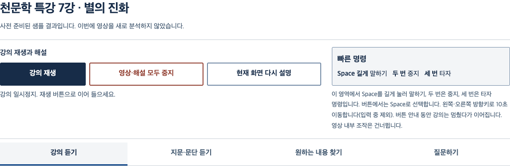
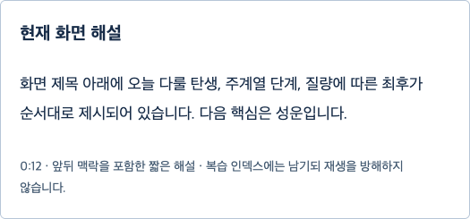
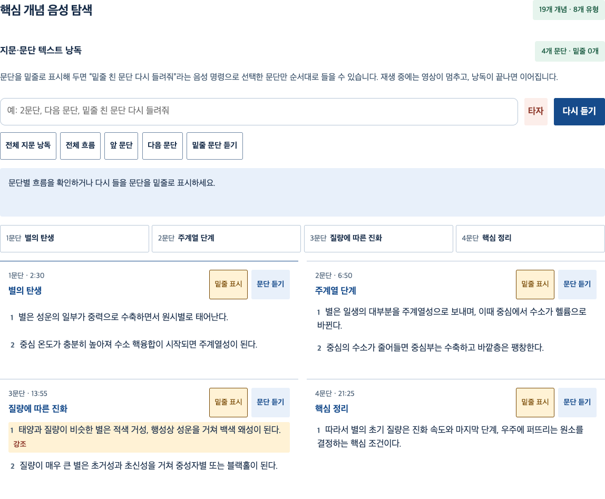

선생님이 말하지 않은 칠판, 이제 들려드릴게요
인터넷 강의에서 말로 설명되지 않은 판서·화면 정보를 찾아, 시각장애·저시력 학생에게 필요한 순간에 짧게 들려주는 학습 도우미입니다.
- 강의 듣기준비된 강의를 고르고 이어 들어요.
- 지문·문단 듣기문단을 읽고 중요한 곳에 밑줄을 그어요.
- 원하는 내용 찾기찾은 내용의 강사 설명을 다시 들어요.
- 질문하기궁금한 점을 묻고 설명을 더 들어요.
듣기만 해서는 놓치는 순간이 있습니다
“여기 이 그림 보면…”
설명은 이어지지만, 그림과 판서에만 있는 정보는 들리지 않습니다.
다시 찾기 어려운 긴 지문
한 문단만 다시 듣고 싶어도, 강의 속 위치를 찾아야 합니다.
묻고 싶은 바로 그 부분
이해가 멈춘 순간, 필요한 설명을 다시 찾아볼 수 있어야 합니다.
강의를 듣고, 멈추고, 스스로 이어가요
아래는 사전 준비된 샘플 결과로 실행한 실제 학생 화면입니다. 새 영상을 분석한 결과가 아닙니다.
필요한 순간에 잠깐 멈춰요
준비된 화면 해설이 있는 지점에서 강의를 잠시 멈춥니다. 학생은 재생과 중지를 직접 고를 수 있습니다.

말하지 않은 화면을 짧게 들어요
강사가 이미 설명한 내용은 되풀이하지 않습니다. 확실하게 확인된 화면 정보만 짧게 안내합니다.

핵심 개념을 찾고 복습해요
긴 지문은 문단별로 듣고 밑줄 친 부분을 다시 찾습니다. 핵심 개념 탐색과 복습 노트로 배운 내용을 정리합니다.

학생이 생각할 자리를 지킵니다
정답 대신 힌트
문제 보호 모드에서는 최종 정답을 가리고 힌트와 개념 중심으로 안내합니다.
원본은 기본적으로 브라우저 안에
별도 동의한 실제 분석에만 임시 전송합니다. 브라우저 보관함 저장도 보호자가 직접 선택합니다.
임시 분석과 삭제 안내확실하지 않으면 말하지 않아요
확신이 낮은 화면 관찰은 보류합니다. 후보 문구를 설명이나 음성에 내보내지 않습니다.
연결한 계정 안에서 관리
보호자는 자신이 만든 학생에게 강의를 배정합니다. 학생의 학습 기록은 로그인한 학습 공간에서 다룹니다.
학생 화면은 큰 버튼 네 개부터
강의 듣기, 지문·문단 듣기, 원하는 내용 찾기, 질문하기. Tab으로 이동하고 Enter·Space로 선택합니다. 강의에서는 방향키로 앞뒤를 탐색합니다.
- 강의 듣기준비된 강의를 고르고 이어 들어요.
- 지문·문단 듣기문단을 읽고 중요한 곳에 밑줄을 그어요.
- 원하는 내용 찾기찾은 내용의 강사 설명을 다시 들어요.
- 질문하기궁금한 점을 묻고 설명을 더 들어요.
지금은 함께 다듬어 가는 시제품입니다
대전 남성중학교 SWIFT 팀이 만든 시제품입니다. 실제 사용자 테스트를 준비하고 있습니다.
샘플은 유료 인증 없이 사용할 수 있습니다. 새 영상의 실제 분석에는 별도 설정과 이용 권한 확인, 분석 동의가 필요합니다.
시작하기 전에 궁금한 점
비용이 드나요?
샘플 기능은 유료 API 인증 없이 체험할 수 있습니다. 실제 AI 분석은 별도 설정과 체험 비밀번호가 필요하며, 공급자 이용 비용이 발생할 수 있습니다. 공개 요금제는 아직 안내되지 않았습니다.
무엇을 준비해야 하나요?
PC와 최신 Chrome을 준비해 주세요. 현재 시제품은 로컬 계정을 사용합니다. 처음 설치된 환경의 보호자 설정과 기존 계정 로그인은 가이드 1단계에서 안내합니다.
스크린리더로 쓸 수 있나요?
앱 음성 대신 스크린리더 안내를 사용하는 모드가 있습니다. VoiceOver·NVDA 실사용 검증은 아직 진행 전입니다. 앱 음성과 겹치지 않도록 학생별 기본 설정을 확인해 주세요.
어떤 강의를 사용할 수 있나요?
공개 영상이나 직접 소유하고 이용·분석 권한이 있는 영상을 사용합니다. 유료 강의, 보호된 스트림의 다운로드, 로그인·DRM 우회는 지원하지 않습니다.